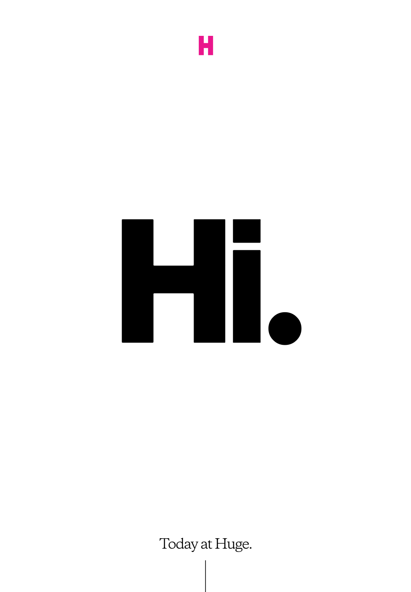
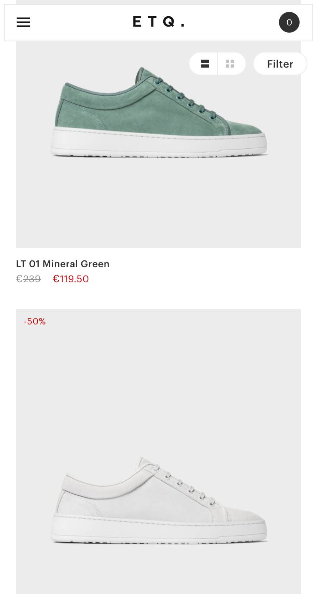
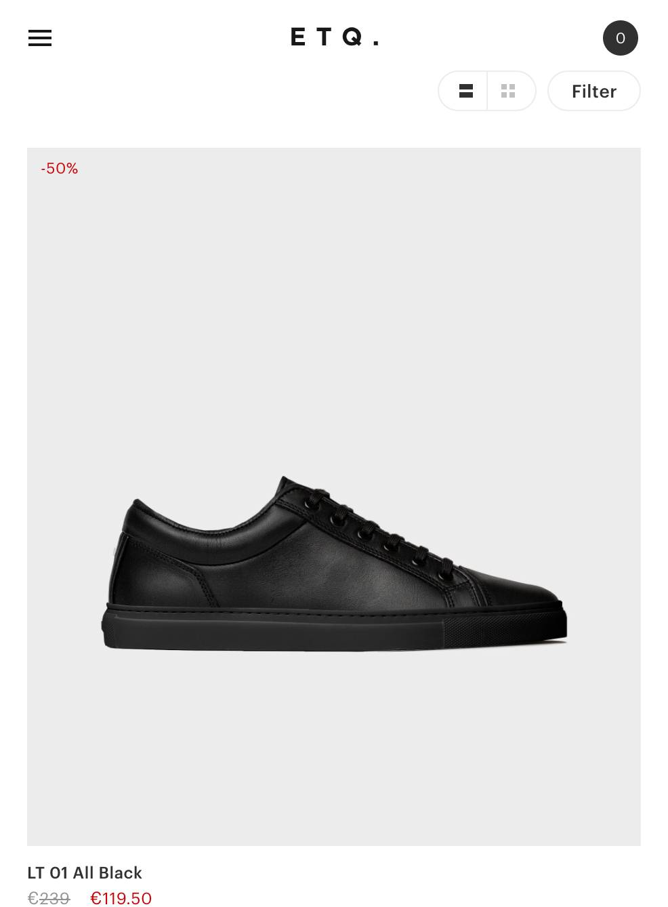

Visual Hierarchy
Huge Inc
https://www.hugeinc.com/
The website for Huge Inc uses the desgin principle of visual hierarchy with the oversized Hello as the first thing you will see. As you scroll down the page the title font is the focal point and guides your eye to the important details.
Hick's Law
ETQ-amsterdam
https://www.etq-amsterdam.com The website for ETQ-amsterdam uses the design principle of Hick's Law. ETQ is a shoe retailer. Their website shows a minilmal amount of shoes at a time. This limits the amount of choices a person has to make on their website and makes it more likely that the customer will purchase shoes.
White Space
ETQ-amsterdam
https://www.etq-amsterdam.com The website for the ETQ-amsterdam uses the design principle of white space. The images on the website are clear and only show the shoe. they only provid the nessacary information so that the viewer is not overloaded with text.